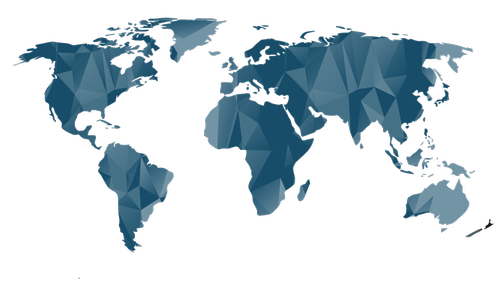

Maiores países em extensão territorial

Mapa Múndi
- Ásia
- Rússia (capital: Moscou)
- China (capital: Pequim)
- Índia (capital: Nova Délhi)
- Cazaquistão (capital: Nur-Sultan)
- Arábia Saudita (capital: Riad)
- África
- Argélia (capital: Argel)
- República Democrática do Congo (capital: Kinshasa)
- Sudão (capital: Cartum)
- Líbia (capital: Trípoli)
- Chade (capital: N'Djamena)
- Américas
- Canadá (capital: Ottawa)
- Estados Unidos (capital: Washington)
- Brasil (capital: Brasília)
- Argentina (capital: Buenos Aires)
- México (capital: Cidade do México)
- Europa
- Rússia (capital: Moscou)
- Ucrânia (capital: Kiev)
- França (capital: Paris)
- Espanha (capital: Madri)
- Suécia (capital: Estocolmo)
- Oceania
- Austrália (capital: Camberra)
- Papua Nova Guiné (capital: Port Moresby)
- Nova Zelândia (capital: Wellington)
- Ilhas Salomão (capital: Honiara)
- Fiji (capital: Suva)
Fonte: Wikipédia
Extremos geográficos